Model checking using 'ppc_pit_ecdf' and 'ppc_loo_pit_ecdf'
Florence Bockting
2026-07-22
Source:vignettes/articles-online-only/loo-pit-correlated-tests.Rmd
loo-pit-correlated-tests.RmdIntroduction
This vignette focuses on pointwise predictive checks based on the probability integral transform (PIT). The PIT is defined as the model’s univariate predictive cumulative distribution function (CDF) evaluated at the observed data. For a well-calibrated model, these transformations result in values that should be approximately uniformly distributed between 0 and 1 (Tesso & Vehtari, 2026; Säilynoja et al., 2022).
In bayesplot, PIT-based checks are implemented in the
ppc_pit_ecdf() and ppc_loo_pit_ecdf()
functions, which plot the empirical CDF of the PIT values against the
expected uniform distribution. The ppc_pit_ecdf_grouped()
function extends this functionality to allow for grouping by
covariates.
New Correlation-Aware Method
Following the work of Tesso & Vehtari (2026), bayesplot now offers a new
method for evaluating the uniformity of PIT values that accounts for
their correlation structure. This method is implemented via the argument
method = "correlated" and is recommended for most
applications. The previous approach is retained via
method = "independent" for backward compatibility and is
the current default to simplfy transition for the user.
This vignette focuses specifically on the changes introduced by the new correlation-aware method. For background information on graphical uniformity tests using PIT, see Säilynoja et al. (2022). For a more general discussion on the use of Leave-One-Out Cross-Validation (LOO-CV), see Vehtari et al. (2017, 2024), among others.
Reading the plots for different (mis)calibration scenarios
The shape of the ECDF curve provides direct insight into how
a predictive distribution is miscalibrated. To illustrate this, the
following examples utilize simulated scenarios where “observed” values
(y) are drawn from a normal(0, sd)
distribution, while “replicated” values (yrep) are
generated from a non-central t-distribution. By varying the degrees of
freedom (df) and non-centrality parameter
(ncp), we can simulate and visualize several distinct types
of miscalibration.
Calibrated model
We begin by simulating a well-calibrated scenario where the
predictive distribution (ypred) closely matches the
data-generating process (y). In this case, the PIT values
should be approximately uniform, and the ECDF should closely follow the
identity (diagonal) line.
\[ \begin{align*} y &\sim \text{Normal}(0, 1) \\ y_{rep} &\sim \text{Student}_{\nu = 100}(0, 1) \quad (\approx \text{Normal}(0, 1)) \end{align*} \]
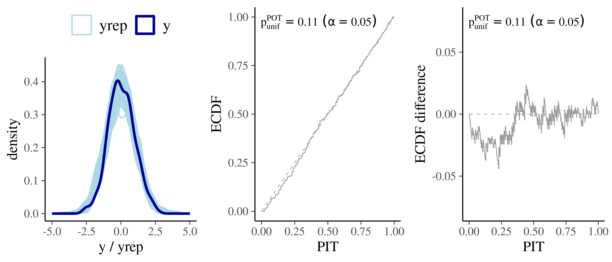
Predictive distribution too wide (overdispersed)
When the predictive distribution is too wide, the model overestimates
the probability mass in the tails. As a result, observed values tend to
fall near the centre of the predictive distribution more often
than expected. This leads to an S-shaped ECDF curve that
typically falls below the diagonal line in the lower tail and rises
above it in the upper tail.
\[ \begin{aligned} y &\sim \text{Normal}(0, 1) \\ y_{rep} &\sim \text{Student}_{\nu = 1}(0, 1) \quad (= \text{Cauchy}(0, 1)) \end{aligned} \]
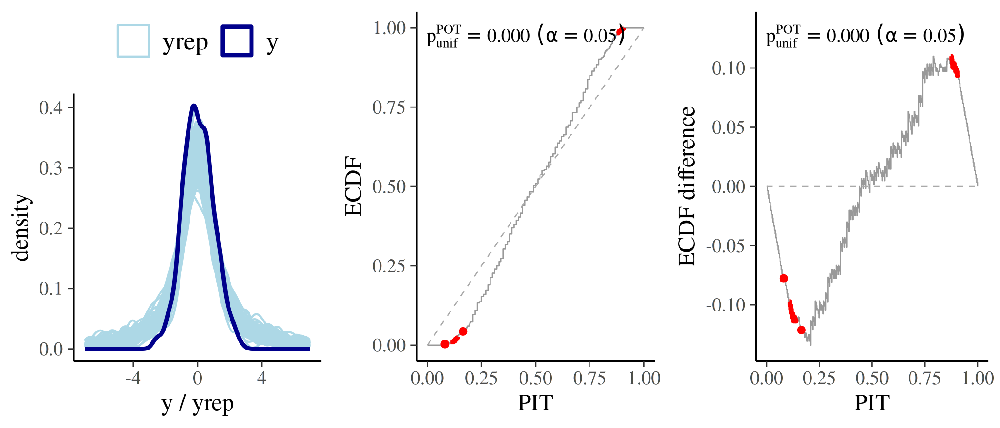
Predictive distribution too narrow (underdispersed)
When the predictive distribution is too narrow, the model
underestimates the potential for extreme values, causing observations to
fall frequently in the tails. This results in a reverse
S-shaped ECDF curve that typically lies above the diagonal
line in the lower tail and below it in the upper tail.
\[ \begin{aligned} y &\sim \text{Normal}(0, 2) \\ y_{rep} &\sim \text{Student}_{\nu = 100}(0, 1) \quad (\approx \text{Normal}(0, 1)) \end{aligned} \]
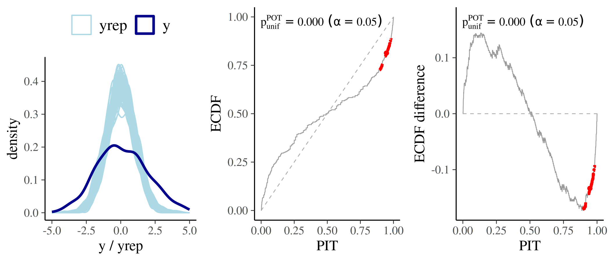
Systematically biased predictions (location shift)
When the model’s predictions are systematically shifted relative to the data, observations tend to fall consistently in one tail of the predictive distribution. This results in an ECDF curve that “bows” aways from the identity line:
- Underestimation (Positive Bias): If the model predicts values that are systematically too low, the PIT values will cluster near 1. The ECDF curve will stay below the diagonal line.
- Overestimation (Negative Bias): If the model predicts values that are systematically too high, the PIT values will cluster near 0. The ECDF curve will stay above the diagonal line.
\[ \begin{aligned} y &\sim \text{Normal}(0, 1) \\ y_{rep} &\sim \text{Student}_{\nu = 100}(-1, 1) \end{aligned} \]
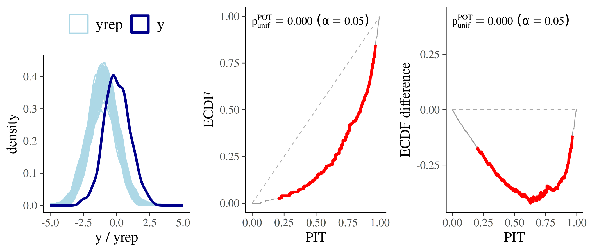
The method argument
method = "independent" (superseded)
When method = "independent" is selected, simultaneous
confidence bands for the ECDF are constructed under the assumption that
the PIT values are both independent and uniform (Säilynoja et al., 2022). However, if this independence
assumption is violated, the resulting bands can be too wide, which
reduces the test’s sensitivity to actual miscalibration (Tesso &
Vehtari, 2026).
Deprecation and Compatibility
As of bayesplot v1.16.0, the "independent"
method is officially superseded. But it will remain the default method
for the time being to simplify the transition for users. If no method is
specified, "independent" will be used and a message will be
printed informing the user:
ℹ In the next major release, the default `method` will change to 'correlated'.
• To silence this message, explicitly set `method = 'independent'` or
`method = 'correlated'`.If "independent" is explicitly set, it will trigger a
message informing the user:
"The 'independent' method is superseded by the 'correlated' method."This is intended to encourage a transition to the
"correlated" method, which will become the default in a
future release.
method = "correlated" (new, recommended)
This method employes one of three dependence-aware uniformity tests
(selected via the test argument; details below) to compute
a global p-value for the null hypothesis of uniformity. Unlike the
independent method, it accounts for the correlation among PIT values
(Tesso & Vehtari, 2026).
Instead of drawing traditional confidence bands, the plot highlights ECDF regions in red where the pointwise contribution to the test statistic is largest. This visualization makes it easier to diagnose the type and location of miscalibration.
set.seed(2026)
pit <- rbeta(300, 1, 1.2)
p1 <- ppc_loo_pit_ecdf(
pit = pit,
method = "independent"
) +
labs(subtitle = "method = 'independent'")
p2 <- ppc_loo_pit_ecdf(
pit = pit, method = "correlated"
) +
labs(subtitle = "method = 'correlated'")
p1 | p2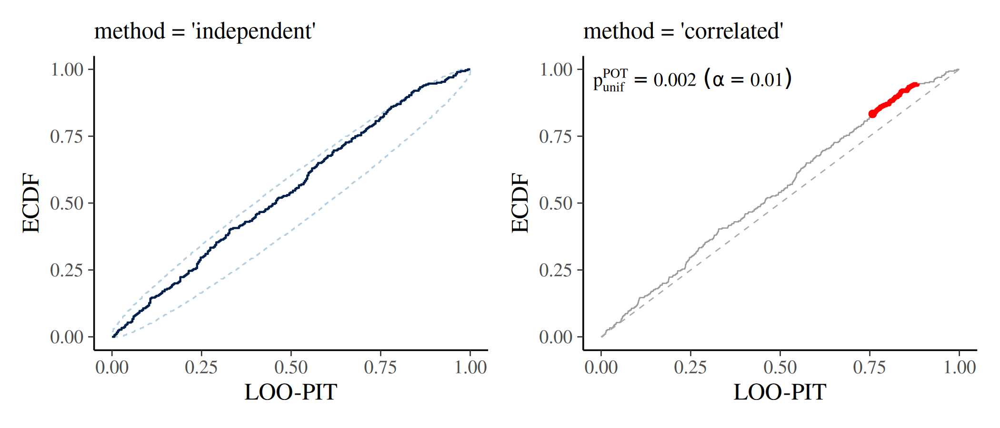
The three uniformity-tests within
method = "correlated"
When using method = "correlated", you select the testing
procedure via the test argument. The three options
correspond to the three procedures proposed by Tesso & Vehtari (2026):
test = "POT"
Pointwise Order Tests Combination (POT) is based on
order statistics of the PIT values and is the recommended
default for most workflows. It should ideally use continuous
LOO-PITs and works for PSIS-LOO weighted rank-based PITs.
Additional arguments
With the introduction of the method = "correlated"
option, the three functions now have additional arguments that control
the appearance and behavior of the plot when using correlated testing
procedures. These arguments are:
gamma
When method = "correlated" and the global test rejects
uniformity, the plot uses color coding to highlight influential regions.
The gamma argument is a non-negative numeric threshold: a
point is highlighted if its pointwise contribution to the test statistic
exceeds gamma. The default is 0, which
highlights all points that contribute at all when the test rejects.
Increasing gamma raises the bar, flagging only the most
strongly deviant points.
set.seed(2026)
pit <- rbeta(300, 1, 1.2)
# Highlight only the most strongly influential regions
p1 <- ppc_loo_pit_ecdf(
pit = pit,
method = "correlated",
plot_diff = TRUE,
gamma = 0
) +
labs(subtitle = "gamma = 0")
# Highlight more broadly
p2 <- ppc_loo_pit_ecdf(
pit = pit, method = "correlated",
plot_diff = TRUE,
gamma = 80
) +
labs(subtitle = "gamma = 80")
p1 | p2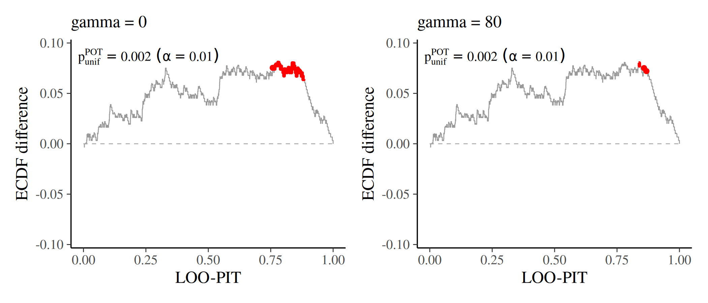
linewidth and color
linewidth controls the width of the ECDF line (default
0.3). color is a named character vector with
two elements controlling the appearance of the plot:
c(ecdf = "grey60", highlight = "red"). Whereby
ecdf is the color of the main ECDF line;
highlight is the color used for the flagged regions when
the global test rejects. Both can be overridden:
pit <- rbeta(300, 2, 2)
p1 <- ppc_loo_pit_ecdf(
pit = pit,
method = "correlated"
) +
labs(subtitle = "default style")
p2 <- ppc_loo_pit_ecdf(
pit = pit,
method = "correlated",
color = c(ecdf = "steelblue", highlight = "orange"),
linewidth = 0.5
) +
labs(subtitle = "custom color / linewidth")
p1 | p2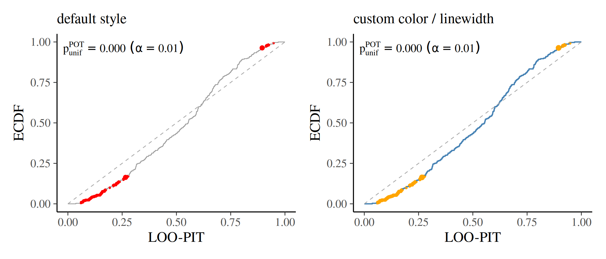
help_text
Setting help_text = TRUE adds an annotation to the plot
showing the test name, (1-prob) level (\(\alpha\)), and global p-value. This is the
default (help_text = TRUE). Set
help_text = FALSE to suppress the annotation.
pit <- rbeta(300, 1, 1.2)
p1 <- ppc_loo_pit_ecdf(
pit = pit,
method = "correlated",
plot_diff = TRUE,
help_text = TRUE
) +
labs(subtitle = "help_text = TRUE")
p2 <- ppc_loo_pit_ecdf(
pit = pit,
method = "correlated",
plot_diff = TRUE,
help_text = FALSE
) +
labs(subtitle = "help_text = FALSE")
p1 | p2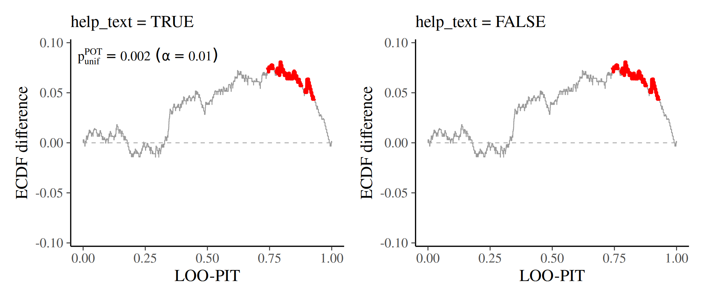
help_text_shrinkage
When help_text = TRUE, help_text_shrinkage
controls the relative size of the annotation. It is a numeric factor in
\((0, 1]\) (default 0.8)
multiplied by the theme text size. Decrease it to shrink crowded
annotations (especially in faceted / grouped plots); increase it toward
1 for larger labels.
pit <- rbeta(300, 1, 1.2)
p1 <- ppc_loo_pit_ecdf(
pit = pit,
method = "correlated",
plot_diff = TRUE,
help_text_shrinkage = 0.5
) +
labs(subtitle = "help_text_shrinkage = 0.5")
p2 <- ppc_loo_pit_ecdf(
pit = pit,
method = "correlated",
plot_diff = TRUE,
help_text_shrinkage = 1
) +
labs(subtitle = "help_text_shrinkage = 1")
p1 | p2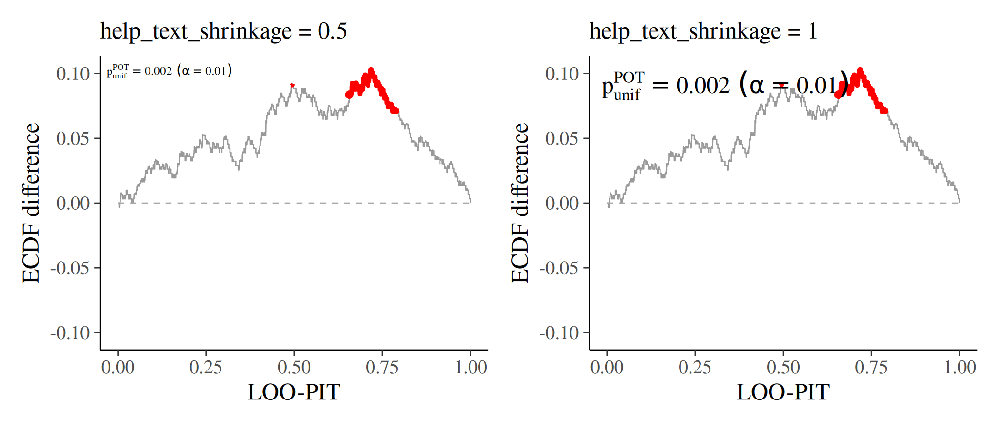
pareto_pit
The pareto_pit argument controls how PIT values are
computed internally when precomputed pit values are not
supplied. It follows the standard PIT computation procedure, except that
in the tails it substitutes the empirical CDF (ECDF) with the CDF of a
fitted generalized Pareto distribution. This reduces variability and
yields non-zero, non-unity PIT values even outside the range of the
reference draws — making it particularly useful for stabilizing PIT
uniformity checks, where a single 0 or 1 can otherwise introduce large
variation.
The following figure compares simulated PIT values from
rstantools::loo_pit() (x-axis) with those from
posterior::pareto_pit() (y-axis). Both axes are
logit-transformed, so PIT values of exactly 0 or 1 map to
-Inf or Inf, respectively; these are shown as
red bars on the left (for 0) and right (for 1) edge of the y-axis. The
plot illustrates how pareto_pit replaces these extreme
values with finite, less extreme alternatives, thereby reducing
variability.
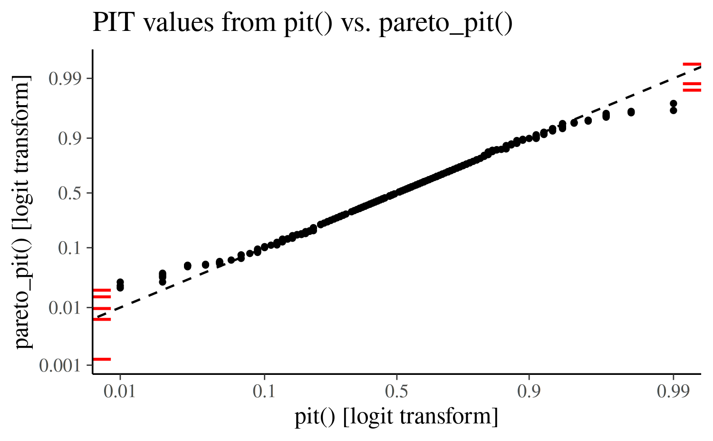
Default behavior (recommended): leave
pareto_pit at its default value. The function chooses the
appropriate PIT computation automatically based on method
and test:
| method | test |
pareto_pit default |
|---|---|---|
"independent" |
– |
FALSE (empirical/rank-based PIT) |
"correlated" |
"PRIT" |
FALSE (empirical/rank-based PIT) |
"correlated" |
"POT" |
TRUE (Pareto-smoothed PIT) |
"correlated" |
"PIET" |
TRUE (Pareto-smoothed PIT) |
When pareto_pit = TRUE, ppc_loo_pit_ecdf()
requires LOO importance weights to be supplied (via lw or
psis_object), since the LOO-PIT computation is weighted.
ppc_pit_ecdf() and ppc_pit_ecdf_grouped() do
not require weights; they call posterior::pareto_pit() with
weights = NULL.
When to override: You can set
pareto_pit manually if you need to force a specific PIT
computation path for diagnostic comparison. In practice this is rarely
necessary.
Grouped checks with ppc_pit_ecdf_grouped()
ppc_pit_ecdf_grouped() applies the same PIT-ECDF checks
within levels of a grouping variable (for example a treatment indicator
or categorical covariate). With method = "correlated", the
uniformity test, highlighting, and optional help-text annotation are
computed separately for each group, and the panels are
arranged with facet_wrap().
This is useful when overall calibration looks acceptable but a
subgroup is miscalibrated. The example below simulates two groups of
equal size: group A is well calibrated, while group B has systematically
too-low predictions (ncp = -1).
set.seed(2026)
n <- 200
S <- 100
group <- rep(c("A (calibrated)", "B (biased)"), each = n / 2)
y <- rnorm(n, mean = 0, sd = 1)
yrep <- matrix(NA_real_, nrow = S, ncol = n)
idx_a <- group == "A (calibrated)"
idx_b <- !idx_a
yrep[, idx_a] <- matrix(rt(S * sum(idx_a), df = 100, ncp = 0), nrow = S)
yrep[, idx_b] <- matrix(rt(S * sum(idx_b), df = 100, ncp = -1), nrow = S)
ppc_pit_ecdf_grouped(
y = y,
yrep = yrep,
group = group,
method = "correlated",
plot_diff = TRUE
)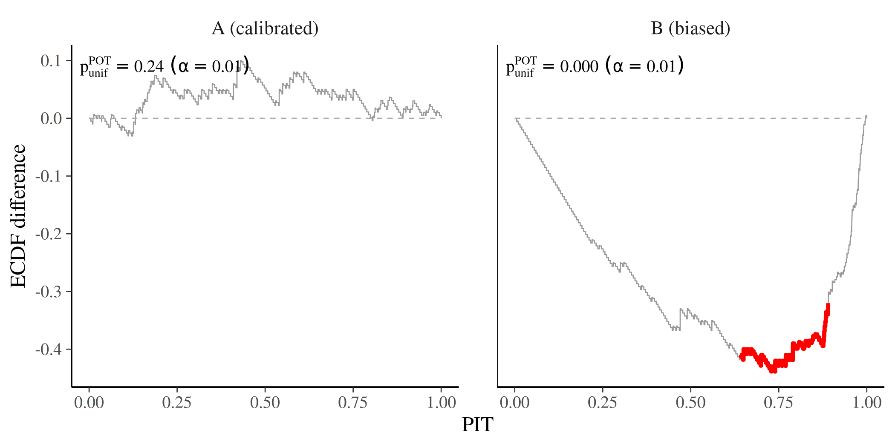
All correlated-method arguments (test,
gamma, linewidth, color,
help_text, help_text_shrinkage,
pareto_pit) work the same way as in
ppc_pit_ecdf(). In faceted plots, a smaller
help_text_shrinkage is often helpful so annotations do not
dominate the panels.
Using brms::pp_check()
It is also possible to use brms::pp_check() with
type = "loo_pit_ecdf" to perform the same testing and
plotting procedure as ppc_loo_pit_ecdf(). The following
code snippet provides an example:
brms::pp_check(
fit_normal,
type = "loo_pit_ecdf",
method = "correlated"
)Case Studies
Several case studies on the companion website for Bayesian Workflow (Gelman et al., 2026) illustrate how to use the updated functions:
Summary of new arguments
| Argument | Values | Default |
|---|---|---|
method |
"independent", "correlated"
|
NULL → falls back to "independent" with a
deprecation notice |
test |
"POT", "PRIT", "PIET"
|
"POT" |
gamma |
numeric \(\ge 0\) | 0 |
linewidth |
numeric | 0.3 |
color |
named character vector | c(ecdf = "grey60", highlight = "red") |
help_text |
TRUE, FALSE
|
TRUE |
help_text_shrinkage |
numeric in \((0, 1]\) | 0.8 |
pareto_pit |
TRUE, FALSE
|
TRUE if test is "POT" or
"PIET" and no pit supplied; FALSE
otherwise |
References
Gelman, A., Vehtari, A., McElreath, R., Simpson, D., Margossian, C., Yao, Y., Kennedy, L., Gabry, J., Burkner, P.-C., Modrak, M., & Leos Barajas, V. (2026). Bayesian Workflow. Routledge. https://www.routledge.com/Bayesian-Workflow/Gelman-Vehtari-McElreath-Simpson-Margossian-Yao-Kennedy-Gabry-Burkner-Modrak-Barajas/p/book/9780367490140
Säilynoja, T., Bürkner, P.-C., and Vehtari, A. (2022). Graphical test for discrete uniformity and its applications in goodness-of-fit evaluation and multiple sample comparison. Statistics and Computing, 32, 32. https://link.springer.com/10.1007/s11222-022-10090-6
Tesso, H., & Vehtari, A. (2026). LOO-PIT predictive model checking. http://arxiv.org/abs/2603.02928
Vehtari, A., Gelman, A., and Gabry, J. (2017). Practical Bayesian model evaluation using leave-one-out cross-validation and WAIC. Statistics and Computing, 27(5), 1413–1432. https://link.springer.com/article/10.1007/S11222-016-9696-4
Vehtari, A., Simpson, D., Gelman, A., Yao, Y., and Gabry, J. (2024). Pareto smoothed importance sampling. Journal of Machine Learning Research, 25(72), 1–58. https://www.jmlr.org/papers/v25/19-556.html